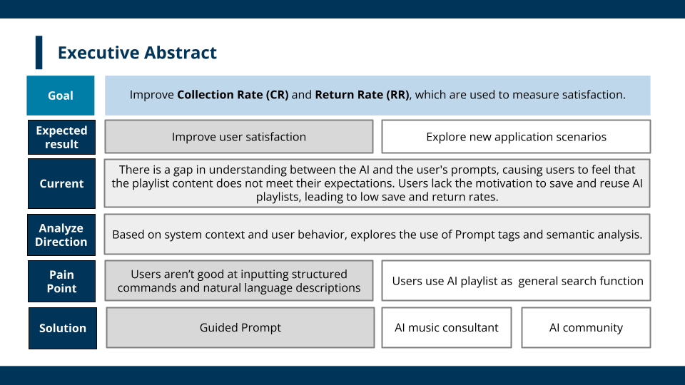

KKBOX AI Playlist Usage Insights and New Positioning
By clustering how users actually talk to KKBOX's AI playlist feature, I found the product was being used for precision search — not the discovery experience it was designed for. That insight pivoted the product's positioning and was adopted company-wide.
Problem
KKBOX launched an AI-powered playlist feature and needed to know: how are users actually using it, and does that match the product vision? Raw usage logs and free-text prompts don't answer that by themselves — the user intent hidden in thousands of prompts had to be structured first.
Data & Method
- Intent mining: embedded user prompts with SBERT (sentence-level transformer embeddings), then clustered them with K-Means to surface distinct usage-intent groups.
- Cluster interpretation: profiled each cluster against the product's intended use cases to locate where user behavior diverged from design assumptions.
- From insight to intervention: designed a guided prompt framework to steer users toward higher-satisfaction interactions, plus a community-based deployment strategy for rollout.
Key Findings
- The User Expectation Gap: users were leveraging the AI for precision searching ("find me exactly this") rather than discovery ("surprise me") — the opposite of the feature's original positioning.
- Because intent clustered so clearly, the fix wasn't a better model — it was better interaction design: guiding users to express intent the AI handles well.
Business Impact
The analysis pivoted the feature's product direction. The guided prompt framework and community-based deployment strategy I proposed were adopted at full scale by the company — turning a usage-analytics project into a repositioning decision.
